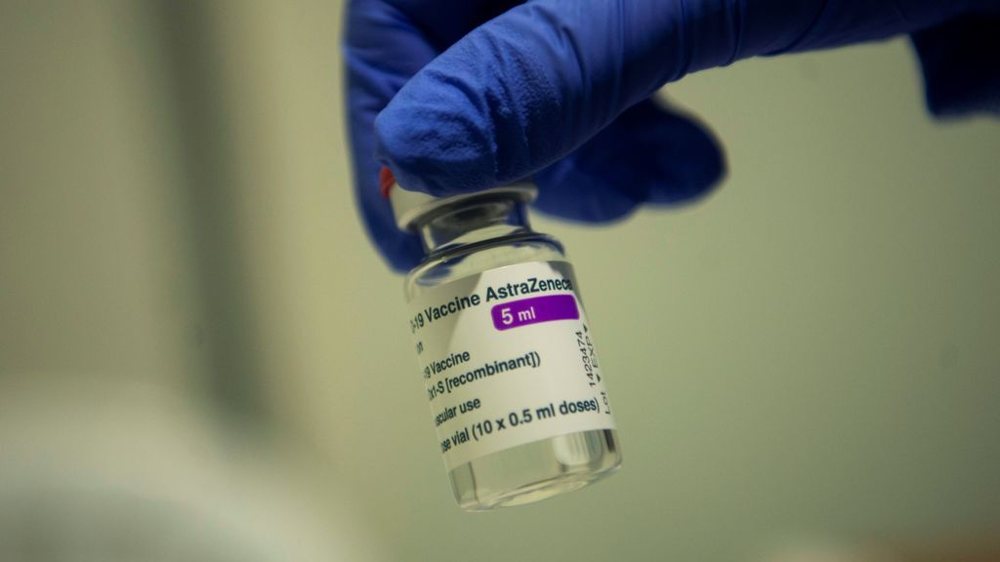

La vacuna pudo ser la causa de la muerte de la profesora de Marbella, según un nuevo informe

Un nuevo informe de la autopsia apunta a la vacuna como posible causa de la muerte de la profesora de Marbella.La mujer falleció el pasado 16 de marzo, dos semanas después de que le administraran la primera dosis de AstraZeneca.Hoy hemos conocido que se investiga el caso de un militar hospitalizado muy grave en Pamplona, justo 15 días después de recibir el mismo suero.
El nuevo informe sobre la muerte de la docente marbellí, que ha adelantado el Diario Sur, contradice el resultado provisional de la autopsia, plasmado en un informe preliminar en el que se indicaba que no se habían hallado vínculos entre la muerte y la administración de la vacuna contra el coronavirus.
Ese primer informe se remitió al Juzgado de Instrucción número 1 de Marbella, que se hizo cargo de la investigación judicial tras recibir un escrito de la familia de la profesora en el que pedía que se realizara una autopsia para aclarar qué le había pasado.
En los últimos días, el servicio de Anatomía Patológica ha recibido los resultados de las pruebas complementarias a la autopsia, y los especialistas sugieren que el cuadro que presentó la profesora puede guardar relación con la vacuna de AstraZeneca y han remitido un nuevo informe al juzgado.
La historia clínica de la docente, el estudio de muestras al microscopio y los análisis realizados descartan la presencia de enfermedades previas que predispusieran a la mujer a sufrir un trombo, señala el periódico.
Al parecer, el episodio sufrido por la profesora podría encajar con el conocido como VIPIT, término acuñado recientemente por un grupo de hematólogos alemanes para definir el síndrome de trombocitopenia protrombótica inmune inducida por la vacuna, una reacción adversa muy excepcional.
La profesora, de 43 años y madre de dos hijos, falleció el pasado 16 de marzo tras haber acudido hasta en tres ocasiones al hospital por malestar general después de que le inocularan la vacuna.
Los resultados preliminares de la autopsia clínica indicaron que la vacuna no estaba relacionada con su muerte, según confirmó el pasado 19 de marzo el consejero andaluz de Salud, Jesús Aguirre, que señaló que no había 'ninguna relación clara y causal entre la vacunación y el fallecimiento'.No obstante, precisó que se trataba de un informe preliminar.
Un militar que presta servicio en el acuartelamiento navarro de Aizoain se encuentra ingresado en un hospital de Pamplona con pronóstico muy grave y se estudia si su estado puede tener relación con su vacunación con el suero de AstraZeneca contra el coronavirus hace dos semanas, según ha informado la Asociación de Tropa y Marinería Española (ATME) y ha confirmado la Delegación del Gobierno.
Al parecer un cabo sintió fuertes dolores de cabeza tras ponerse el suero de Oxford y acudió a urgencias.Una semana después fue ingresado con pronóstico muy grave en un hospital de Pamplona.
Posted On: 2021-04-23T00:00:00
Content Date: 2021-04-23
Download Date: 2021-09-16
Document ID: L0C04G6AB